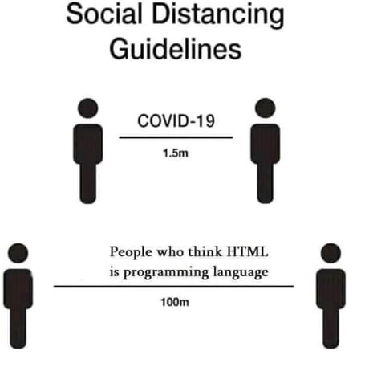

El módulo profesional de Lenguajes de marcas se imparte durante el primer curso del Ciclo Formativo de Grado Superior de Desarrollo de Aplicaciones Multiplataforma (DAM). De acuerdo con la normativa reguladora del ciclo formativo, el módulo profesional tiene asignadas un total de 128 horas, en 4 horas semanales durante 32 semanas aproximadamente.
